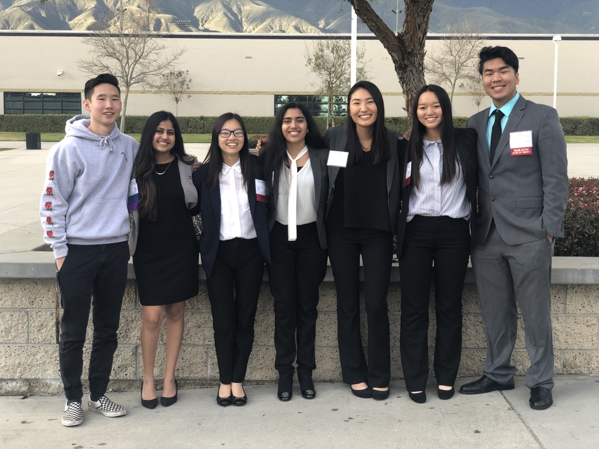
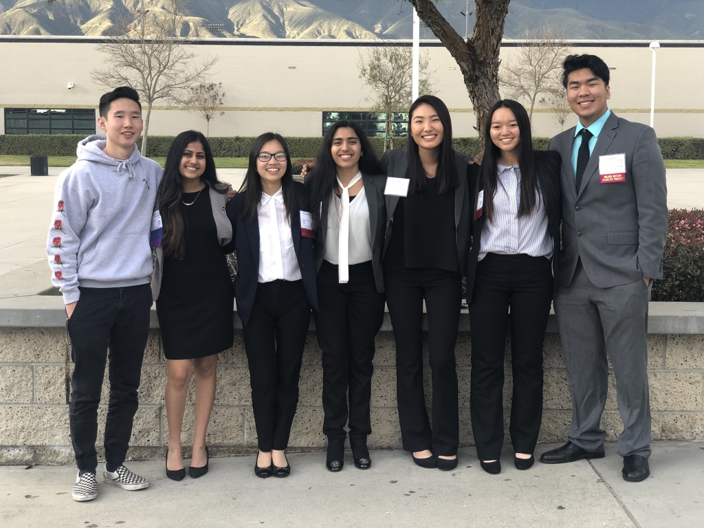
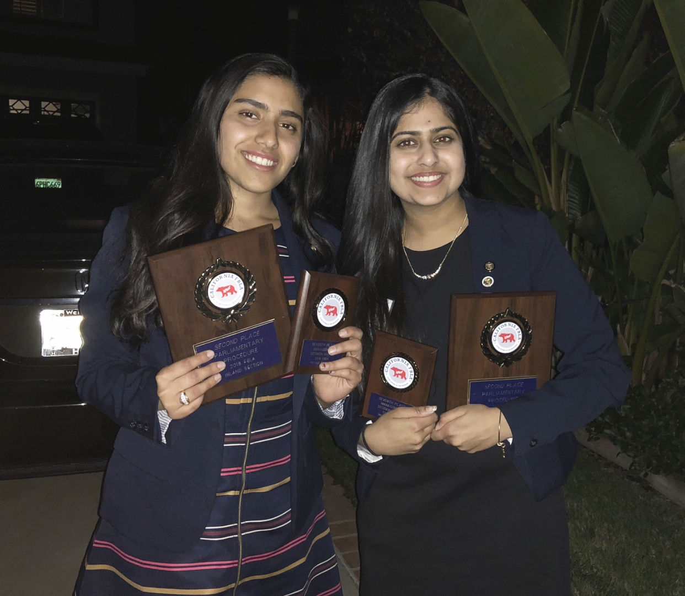
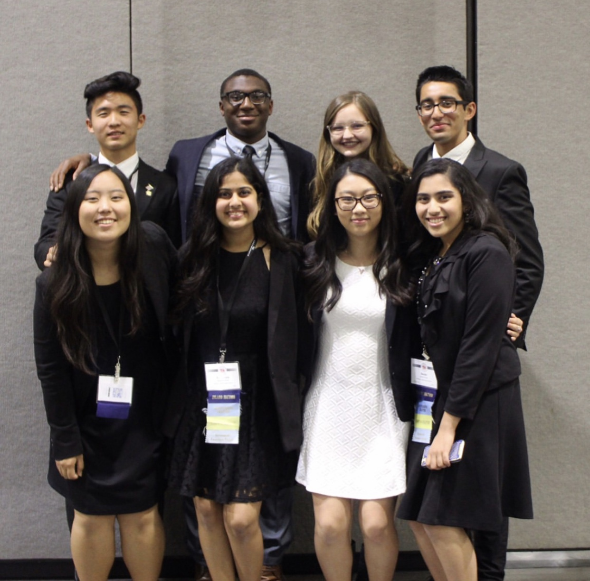
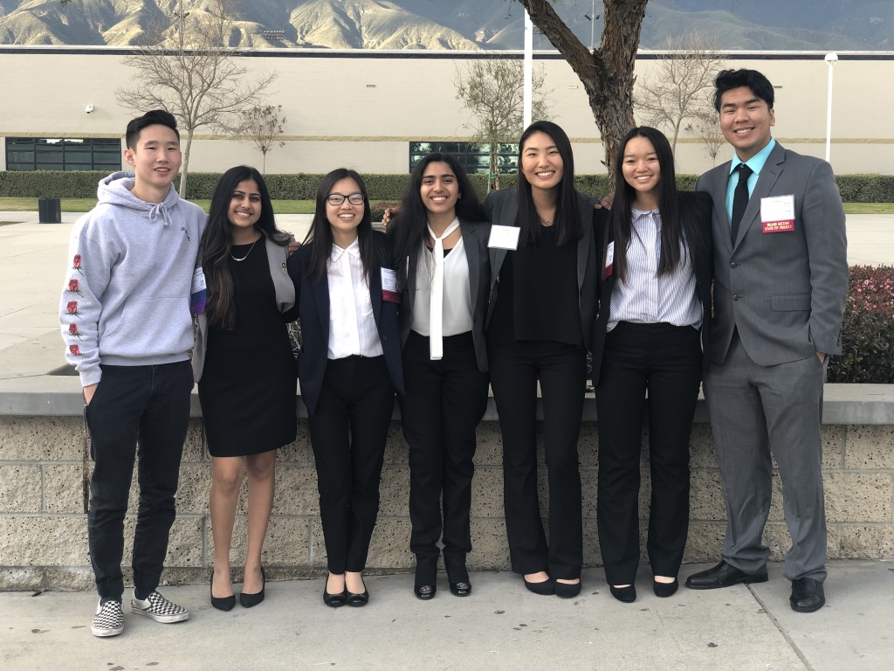
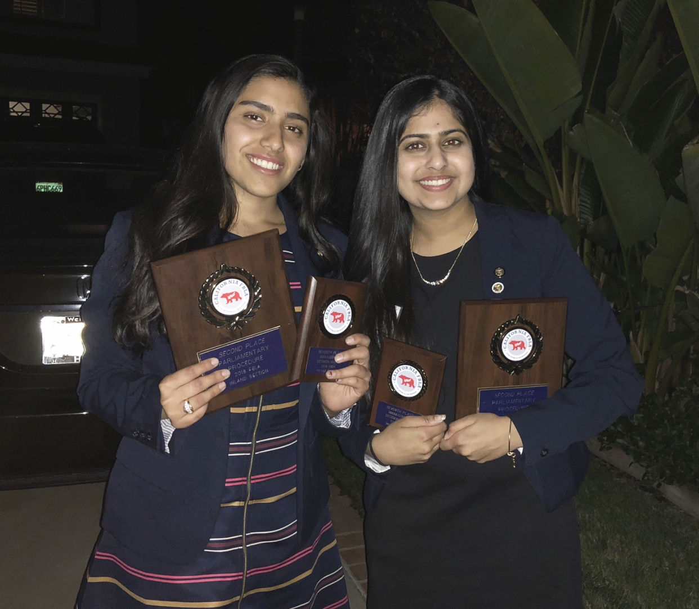
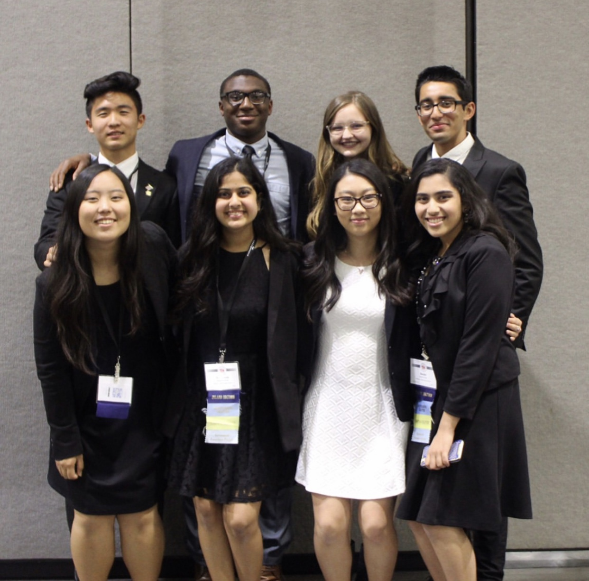

Shayona Shah
I am an Economics and Administrativemajor student seeking professional endeavors in management and administration to gain hands-on experience. I have strong technical proficiency with work history in multiple leadership positions. Furthermore, I am aware of In-depth knowledge of Microsoft applications coupled with customer service and clerical abilities. I also have a proven history of organization and communication skills. My objectives are to incorporate my love and passion for Business and Management into a multicultural and diverse community. Also, not only to strive for success, but have the will and courage to do beyond the expected.I can say that I am a responsible and a hard-working student. Moreover, being a sociable person, I have many friends since I like to communicate with people and get to know new interesting individuals. I enjoy my time at UCR: it is really nice campus to find a place to study, the students are very friendly and ready to help. The atmosphere cannot but make me want to go there every time. I like to receive and deal with challenging tasks. I am a very enthusiastic student and I think this is a strong point of mine.
My friends say that I am a very passionate and outgoing person with a good sense of fashion style. As soon as I meet new people who are happy to meet me, I feel extremely comfortable with them. I believe that building bonds with people is one of the most important values in human life. We exchange new ideas, find many interesting things about each other and experience new things. I appreciate friendship and people who surround me.
Meeting new people who support all my efforts to grow and develop my skills not only in the subjects but also in my hobbies gives me a lot of energy. In my free time I enjoy traveling, baking, and dancing. I have danced for over 15 years including styles such as Hip-Hop, Latin, Bollywood, and Jazz. I even joined an Indian ethnic folk dance team at UCR called UCRaas. As for traveling, I have recently been to Italy as it has always been my dream location. I truly enjoyed learning the different culture, trying delicious food, and witnessing all the scenes. Furthermore, I am a baker in my home. Even though I am not a professional, I love trying to make ranges of unique desserts. As for family values, I come from an Indian family with a hindu religion background. My religion and culture are especially very important to me. This is one way I can connect to my heritage of my ancestors. Through this I am able to learn my own family history and celebrate special moments. It is something I never want to lose touch of and will continue to hold close dear to my heart.
Experience
Public Affairs and Outreach Associate: Web Coordinator
• Authored press releases and communication materials
• ensured all sites adhered to company elements
• work with team members to deliever project requirements
President
• Started Section and State project committees
• Planned weekly agendas and manage the overall officer board and club member
Editor-in-Chief
• Delegated and monitored progress of assignments,
• ensured achievement of all deadlines.
• Pitched several stories weekly, storyboarded plans and assigned writing to various reporters.
• Reviewed and edited copy ahead of final evaluation, verifying content conformed to style and tone guidelines.
Education
UC Riverside
University of California Riverside
Portfolio


 




 